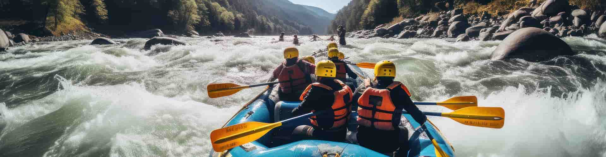
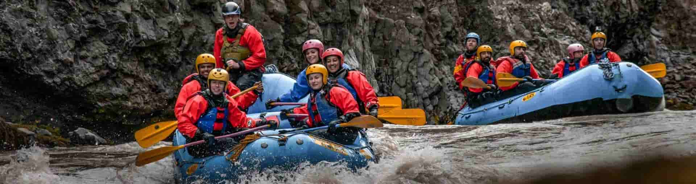
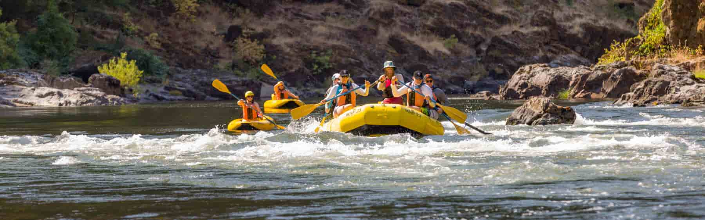
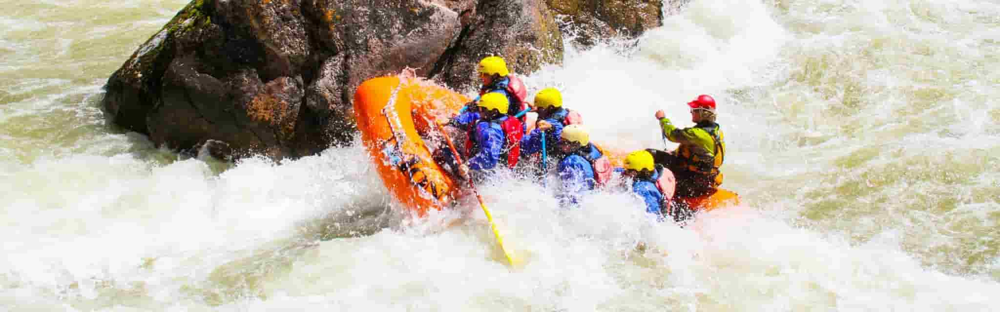

GO ON A TRIP WITH US
Have a memorable adventure
Fanstatic Adventures

UNITED STATES – Grand Canyon Adventure - Experience the ultimate white water rafting journey through the legendary Colorado River in the Grand Canyon. Towering cliffs, powerful rapids, and breathtaking desert landscapes make this trip unforgettable. Whether you're chasing adrenaline or scenic exploration, this adventure delivers both thrill and awe. Perfect for bold explorers ready to conquer one of the world’s most iconic rafting destinations.

UNITED KINGDOM – Welsh River Escape - Discover the excitement of white water rafting on the vibrant rivers of Wales, where adventure meets lush green beauty. With expertly guided routes and steady rapids, this trip is ideal for beginners and fun-seekers alike. Feel the rush as you navigate energetic waters surrounded by stunning countryside views. It’s the perfect blend of excitement, safety, and unforgettable outdoor fun.

ITALY – Alpine Rapids Experience - Ride the crystal-clear rapids of Italy’s Alpine rivers, where glacier-fed waters carve through dramatic mountain valleys. This thrilling rafting journey combines stunning scenery with fast-paced excitement for an unforgettable outdoor escape. Feel the cool mountain air as you paddle through dynamic rapids surrounded by breathtaking landscapes. It’s adventure, beauty, and adrenaline all wrapped into one Italian masterpiece.

SPAIN – Pyrenees Splash Adventure - Dive into the sun-soaked rapids of Spain’s Pyrenees for a rafting experience full of energy and charm. Warm weather, rolling mountain views, and lively rapids create the perfect setting for adventure lovers. Whether you're new to rafting or chasing excitement, this trip offers fun-filled moments from start to finish. Get ready for splashes, laughter, and unforgettable memories under the Spanish sun.
Available Trips
| Country | River Location | Difficulty Level | Trip Duration | Best Season | Price | Highlights |
|---|---|---|---|---|---|---|
| United States | Colorado River (Grand Canyon) | Intermidiate - Advanced | 1-7 days | May - September | 2500 | Iconic canyon views, long expeditions |
| United Kingdom | Welsh River Escape | Beginner - Intermidiate | Half day - 1 day | March - October | $200 | Great for Beginners, Controlled dam releases |
| Spain | Pyrenees Splash Adventure | Beginner - Advanced | Half day - 2 days | April - September | $400 | Warm Weather, Scenic Mountain Views |
| Italy | Alpine Rapids Experience | Intermidiate - Advanced | 1day | May - September | $220 | Alpine Rapids, glacier-fed river | >
| Norway | Sjoa River | Intermidiate - Expert | 1-3 days | June - August | $600 | Cold, powerful rapids, wild Nordic landscapes |